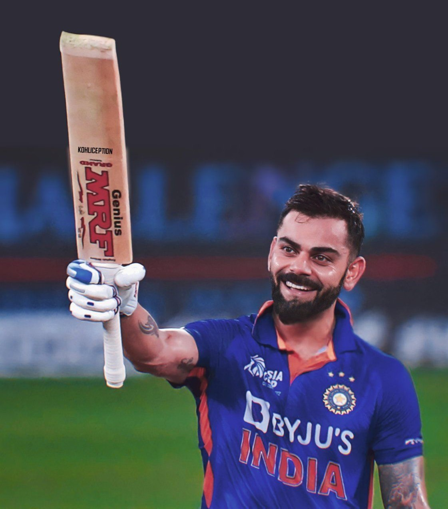

Virat Kohli
The King of Cricket
Personal Information
Full Name: Virat Kohli
Birth Date: November 5, 1988
Birth Place:Delhi, India
Nickname: Cheeku
Height: 5 ft 9 in (175 cm)
Batting: Right-handed
Bowling: Right-arm medium
Role: Top-order batter
Relations: Anushka Sharma (wife)
- Test records
- Most wins as captain of India, with 40 wins out of 68 matches
- Four Test double-hundreds in four consecutive series
- ODI records
- Most ODI centuries (50)
- Most ODI centuries while chasing(27)
- Most ODI centuries in India (22)
- Fastest to - 8000 runs (175 innings), 9000 runs (194 innings), 10,000 runs (205 innings),11,000 runs (222 innings), 12,000 runs (242 innings), and 13,000 runs (267 innings)
- T20I records
- Most runs in T20Is (4,042 runs)
- Highest career batting average in T20I – 51.75.
- Fastest to - 3,000 runs (81 innings), 3,500 runs (96 innings), and 4,000 runs (107 innings)
- Most Player of the Match awards (15 times) and Player of the Series awards (7 times)
- IPL records
- Most runs in Indian Premier League (8,004)
- Most runs in a single edition of IPL (973 runs in 2016).
- Only player to be involved in three double-century plus stands, two times with AB de Villiers and once with Chris Gayle.
- Most runs against Delhi Capitals (1,030)
- Most hundreds in the league (8) and in a single season (4)
About virat kohli - the run machine
Introduction:
Welcome To The Biography Of Virat Kohli, An Iconic Cricketer Who Has Left An Indelible Mark On The Sport And Captured The Hearts Of Millions Of Fans Worldwide. From His Early Days As A Passionate Young Cricketer To Becoming The Captain Of The Indian Cricket Team, Virat's Journey Is An Inspiring Tale Of Determination, Perseverance, And Unparalleled Talent.
Early Life And Cricketing Beginnings:
Virat Kohli Was Born On November 5, 1988, In Delhi, India. Even As A Child, His Love For Cricket Was Evident, And He Started Playing The Game At A Very Young Age. Virat's Father Recognized His Son's Passion And Enrolled Him In The West Delhi Cricket Academy When He Was Just Nine Years Old.
Rising Through The Ranks:
As A Talented Youngster, Virat Quickly Made His Mark In Domestic Cricket. He Represented Delhi At Various Age-Group Levels And Consistently Scored Heavily, Catching The Attention Of Selectors And Cricket Enthusiasts Alike. His Aggressive Batting Style, Unwavering Focus, And Ability To Chase Down Targets Under Pressure Were The Attributes That Set Him Apart.
International Debut And Initial Challenges:
Virat Kohli Made His Much-Anticipated International Debut In August 2008, Playing An ODI Against Sri Lanka. However, He Faced A Tough Time Initially And Struggled To Convert His Potential Into Substantial Scores. Despite Facing Criticism And Doubts, Virat Never Lost Faith In His Abilities And Worked Tirelessly To Improve His Game.
The Turning Point:
The Turning Point In Virat Kohli's Career Came During The ICC Cricket World Cup 2011. As India's Vice-Captain, He Played A Crucial Role In India's Triumph, Contributing With Vital Runs Throughout The Tournament. His Match-Winning Century Against Arch-Rivals Pakistan In The Semi-Final And Composed Innings In The Final Against Sri Lanka Established Him As A Force To Be Reckoned With On The World Stage.
Captaincy And Leadership:
Virat Kohli Took Over The Captaincy Of The Indian Cricket Team In Limited-Overs Formats In 2017 And Became The Test Captain In 2014. His Aggressive And Fearless Approach To Leadership Has Led The Team To Several Memorable Victories. Under His Guidance, India Achieved A Historic Test Series Win In Australia In 2020-21, Showcasing His Prowess As A Leader Who Leads By Example.
Batting Records And Achievements:
Virat Kohli's Batting Prowess Is Legendary, And He Has Amassed A Staggering Number Of Records Over The Years. He Holds Numerous Records, Including The Fastest Century In ODIs, The Fastest To 8,000, 9,000, 10,000, And 11,000 Runs In ODIs, And The Most Centuries In Successful ODI Run-Chases. His Consistency Across Formats And Insatiable Hunger For Runs Have Earned Him The Tag Of One Of The Greatest Batsmen Of All Time
Off The Field:
Beyond Cricket, Virat Kohli Is Also Known For His Philanthropy And Commitment To Various Social Causes. He Actively Supports Initiatives Related To Child Welfare, Education, And Health. His Passion For Fitness Has Inspired Many, And He Encourages A Healthy Lifestyle Through His Brand, One8, Which Promotes Fitness And Wellness Products.
Conclusion:
Virat Kohli's Journey From A Young Boy With A Dream To A Cricketing Legend Is A Testament To The Power Of Dedication And Hard Work. His Impact On The Game Of Cricket Is Immeasurable, And His Journey Continues To Inspire Countless Aspiring Cricketers And Fans Worldwide. As Virat Continues To Redefine Cricketing Excellence, He Remains An Icon And A Role Model For Generations To Come.